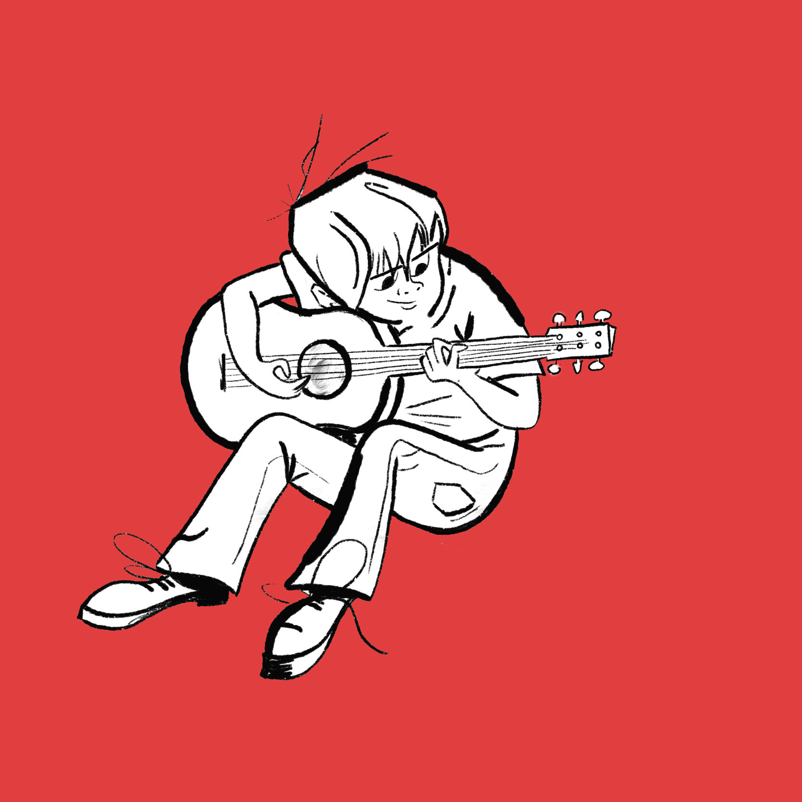
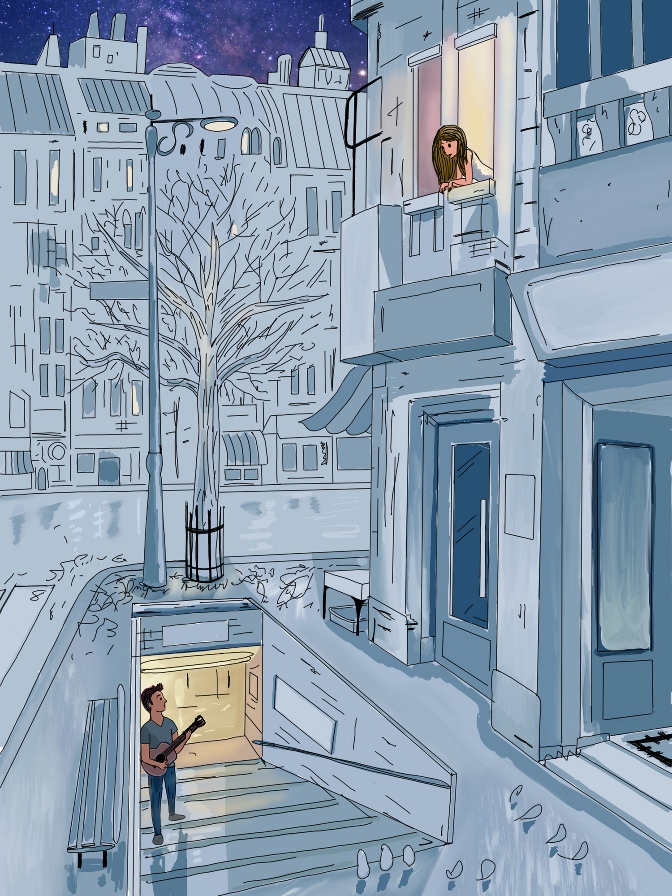
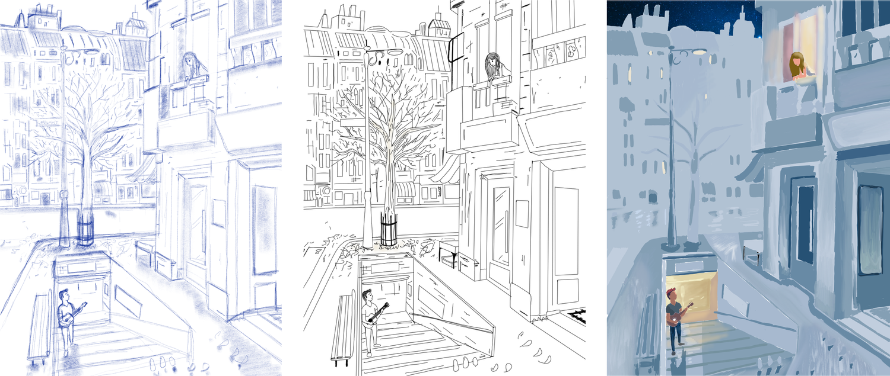
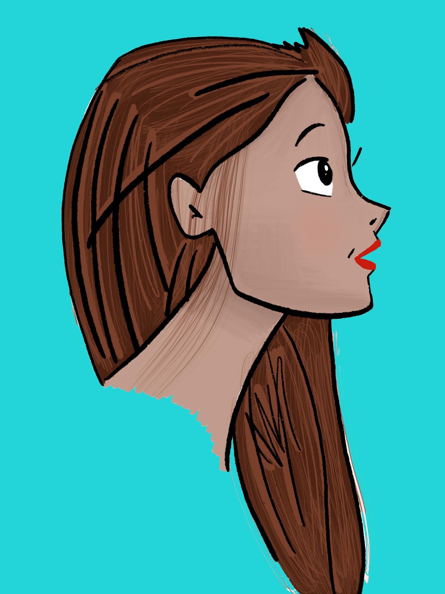
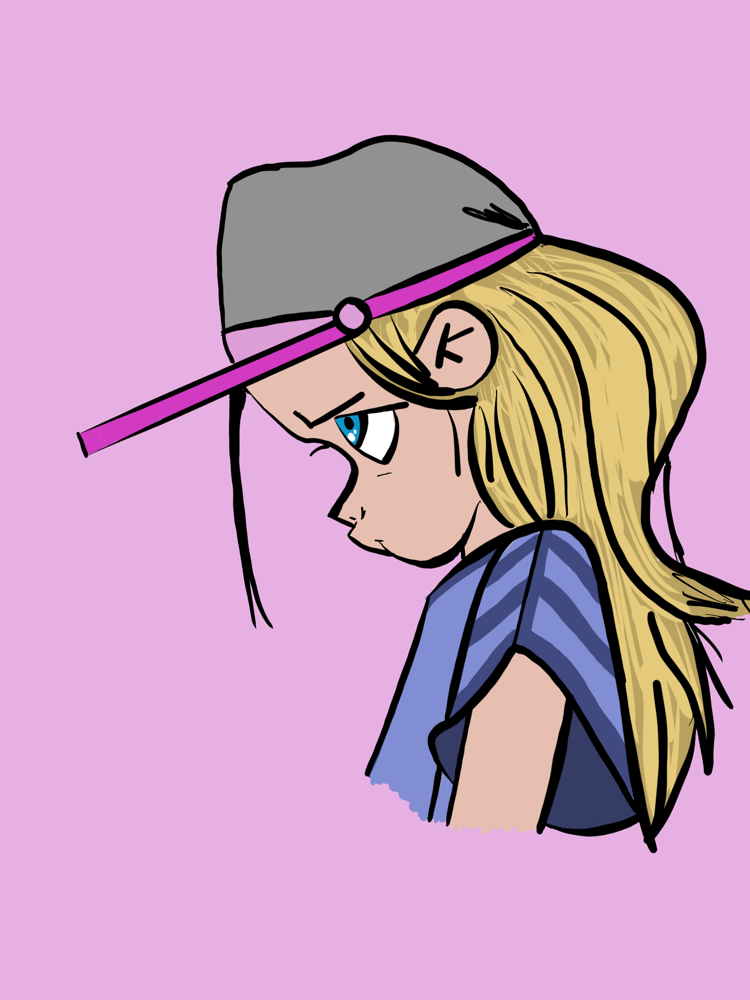
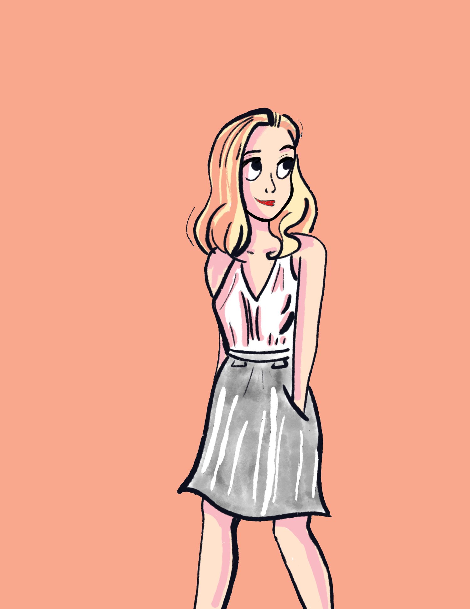
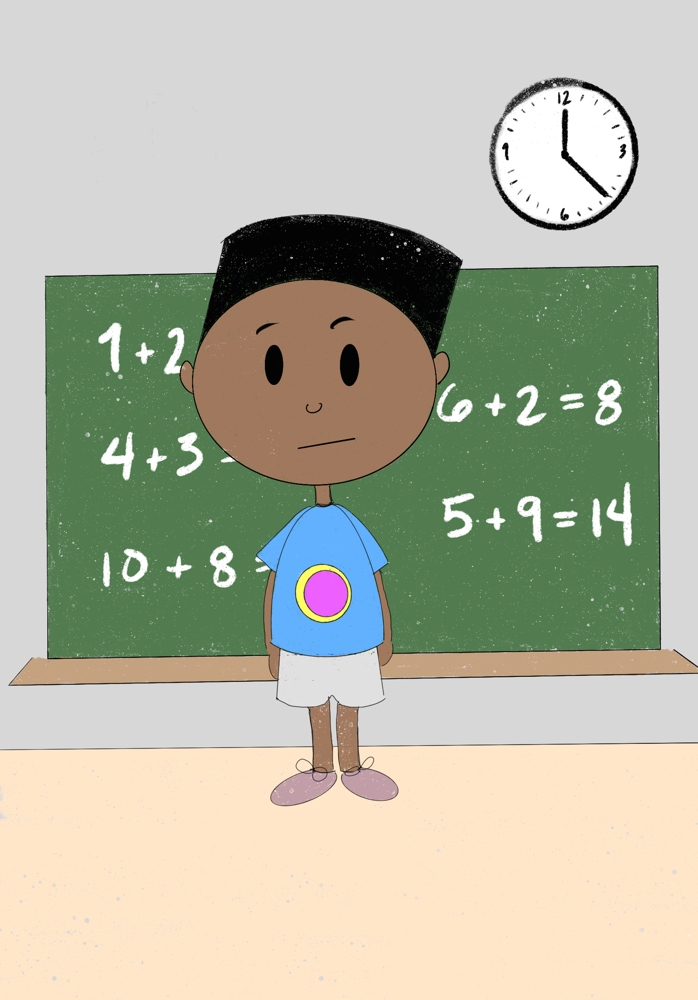
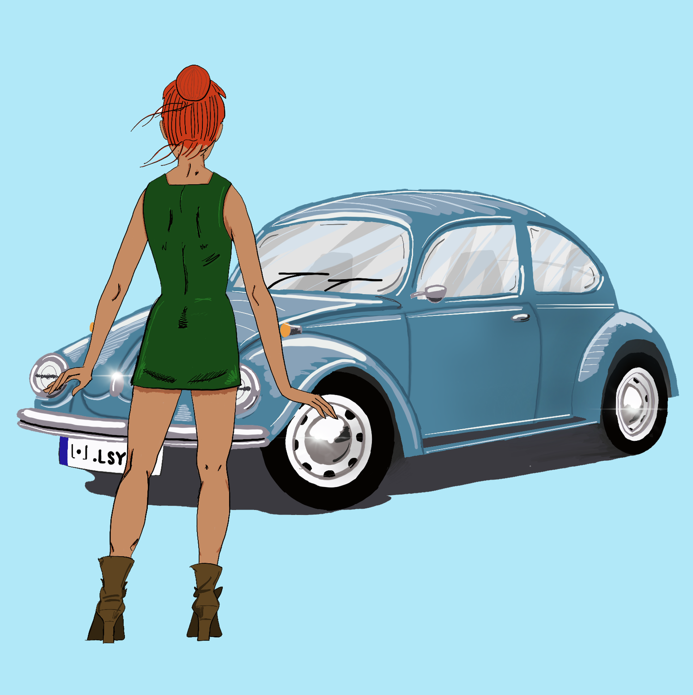
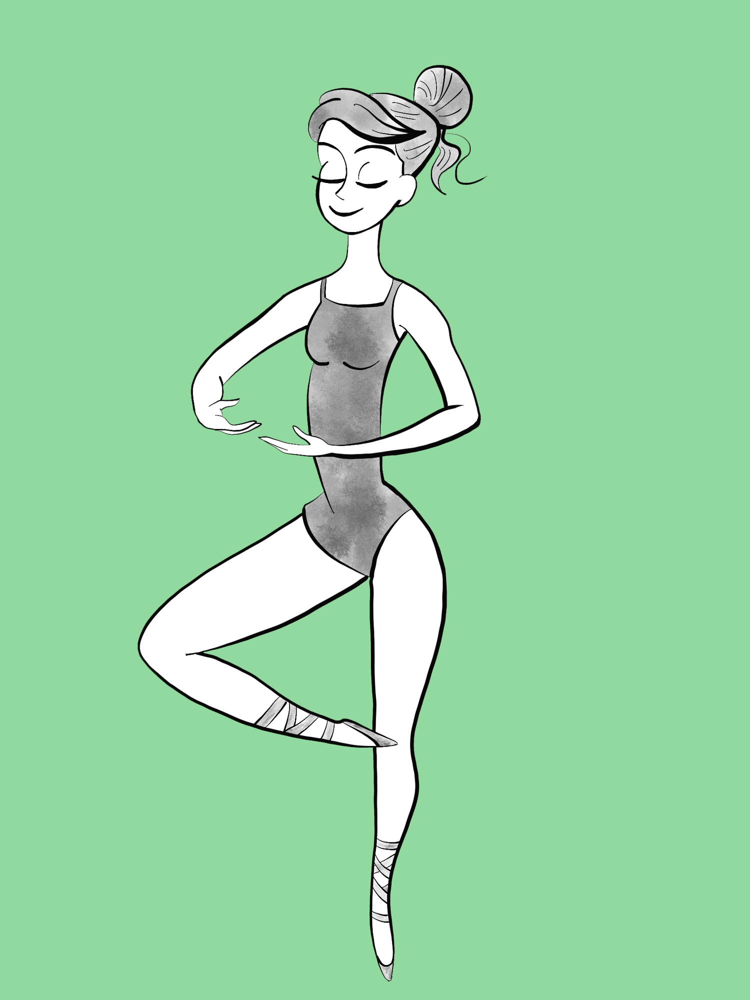

← Back to Work
Illustrations & Sketches
A collection of illustrations and sketches I've made over the years. Enjoy.









A collection of illustrations and sketches I've made over the years. Enjoy.








